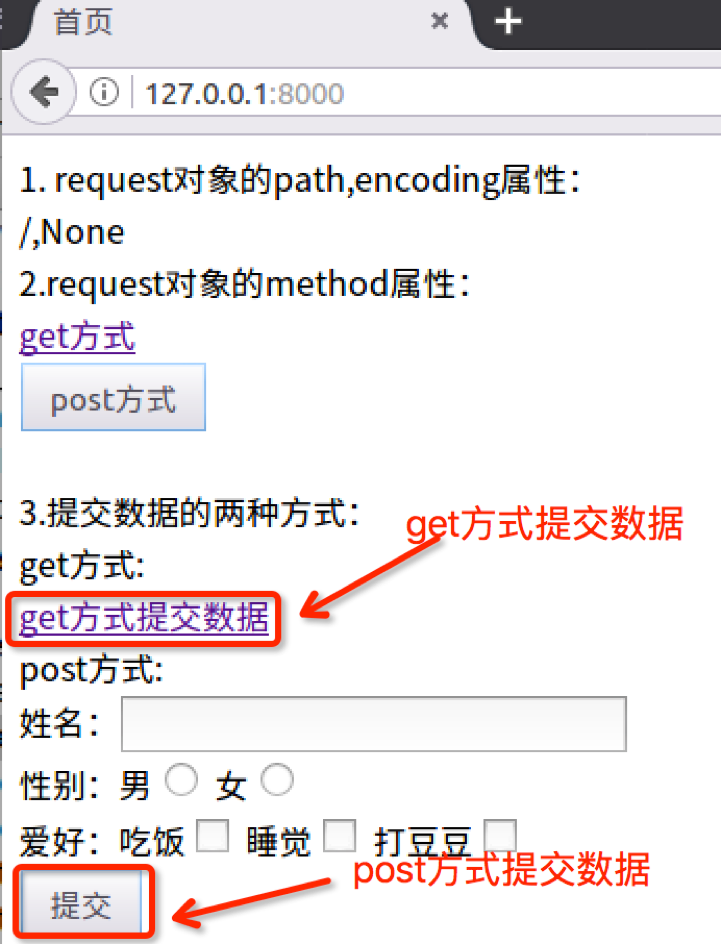
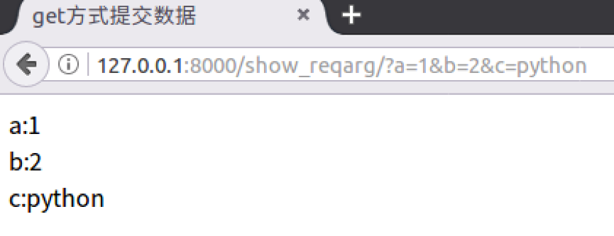
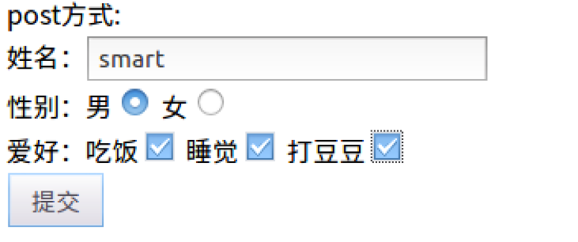
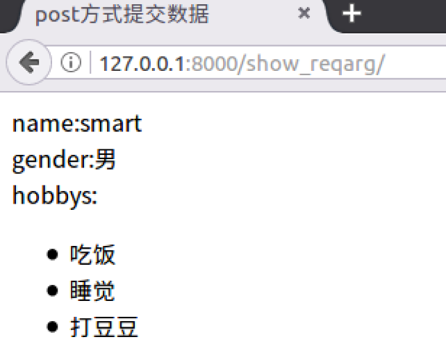

GET属性
请求格式：在请求地址结尾使用?，之后以"键=值"的格式拼接，多个键值对之间以&连接。
例：网址如下
http://www.itcast.cn/?a=10&b=20&c=python
其中的请求参数为：
a=10&b=20&c=python
- 分析请求参数，键为'a'、'b'、'c'，值为'10'、'20'、'python'。
- 在Django中可以使用HttpRequest对象的GET属性获得get方方式请求的参数。
- GET属性是一个QueryDict类型的对象，键和值都是字符串类型。
- 键是开发人员在编写代码时确定下来的。
- 值是根据数据生成的。
POST属性
使用form表单请求时，method方式为post则会发起post方式的请求，需要使用HttpRequest对象的POST属性接收参数，POST属性是一个QueryDict类型的对象。
问：表单form如何提交参数呢？
答：表单控件name属性的值作为键，value属性的值为值，构成键值对提交。
- 如果表单控件没有name属性则不提交。
- 对于checkbox控件，name属性的值相同为一组，被选中的项会被提交，出现一键多值的情况。
- 键是表单控件name属性的值，是由开发人员编写的。
- 值是用户填写或选择的。
示例
1）打开booktest/views.py文件，创建视图show_reqarg。
#接收请求参数
def show_reqarg(request):
if request.method == 'GET':
a = request.GET.get('a') #获取请求参数a
b = request.GET.get('b') #获取请求参数b
c = request.GET.get('c') #获取请求参数c
return render(request, 'booktest/show_getarg.html', {'a':a, 'b':b, 'c':c})
else:
name = request.POST.get('uname') #获取name
gender = request.POST.get('gender') #获取gender
hobbys = request.POST.getlist('hobby') #获取hobby
return render(request, 'booktest/show_postarg.html', {'name':name, 'gender':gender, 'hobbys':hobbys})
2）打开booktest/urls.py文件，配置url。
url(r'^show_reqarg/$', views.show_reqarg),
3）修改templates/booktest目录下的index.html，添加代码如下：
<html>
<head>
<title>首页</title>
</head>
<body>
...
...
3.提交数据的两种方式：
get方式:<br/>
<a href="/show_reqarg/?a=1&b=2&c=python">get方式提交数据</a><br/>
post方式:<br/>
<form method="post" action="/show_reqarg/">
姓名：<input type="text" name="uname"><br/>
性别：男<input type="radio" name="gender" value="男"/>
女<input type="radio" name="gender" value="女"/><br/>
爱好：
吃饭<input type="checkbox" name="hobby" value="吃饭"/>
睡觉<input type="checkbox" name="hobby" value="睡觉"/>
打豆豆<input type="checkbox" name="hobby" value="打豆豆"/><br>
<input type="submit" value="提交">
</form>
<br/>
</body>
</html>
4）运行服务器。
http://127.0.0.1:8000/
浏览效果如下图：

5）在templates/booktest目录下创建show_getarg.html，show_postarg.html，代码如下:
show_getarg.html:
<html>
<head>
<title>GET方式提交数据</title>
</head>
<body>
a:{{ a }}<br/>
b:{{ b }}<br/>
c:{{ c }}<br/>
</body>
</html>
show_postarg.html:
<html>
<head>
<title>POST方式提交数据</title>
</head>
<body>
name:{{ name }}<br/>
gender:{{ gender }}<br/>
hobbys:
<ul>
{% for hobby in hobbys %}
<li>{{ hobby }}</li>
{% endfor %}
</ul>
</body>
</html>
6）点击链接GET方式提交数据，浏览效果如下图：

7）后退到index页面，输入数据如下，点击提交，浏览效果如下图：

